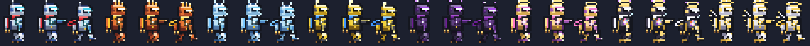
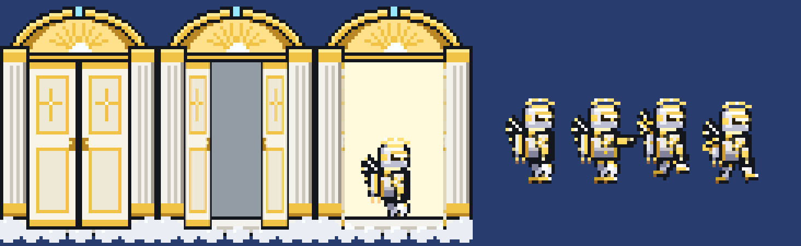
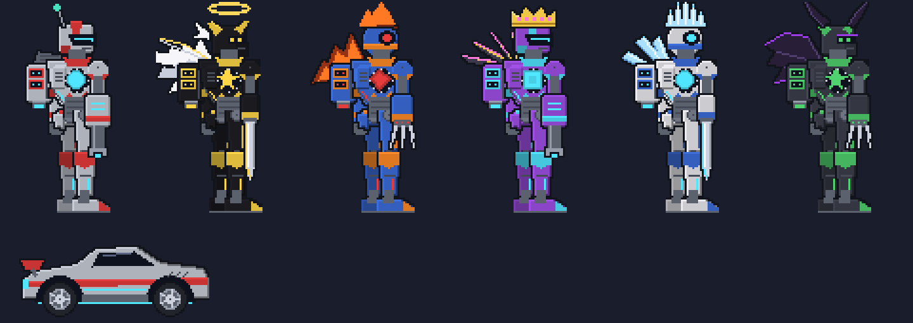
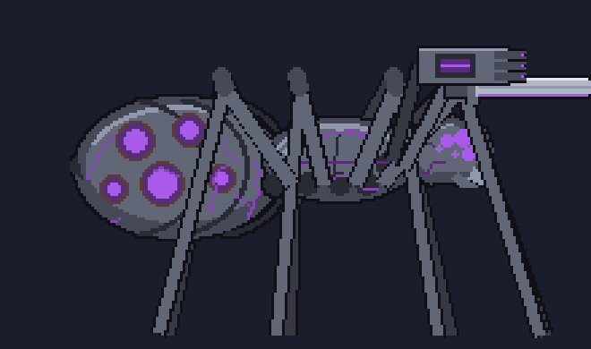

Original mod
Robot Jack
Find the Robot Trigger and transform into a sci-fi combat robot. Call down the Orbital Cannon Strike, unlock five elemental variants, Omega Jack and God Jack, become a giant customizable titan that turns into a car, and take on the infected robot spider Akutoku-ō.


Robot Jack, his five variants, Omega Jack and God Jack (placeholder art).
Getting the Robot Trigger
It can't be crafted; you have to find it:
- Underground Gold Chests: roughly 1 in 4 of them in a newly generated world has one, and every new world gets at least one.
- Enemy drop: any enemy killed below the surface has a 1 in 150 chance to drop one (not bosses, critters or statue-spawned enemies). This is how you get one in a world made before you installed the mod.
Use it to become Robot Jack; use it again to turn back. No time limit or cooldown.
+25%Damage
+20Defense
10%Damage reduction
+30%Move speed
Higher jumps, no knockback, no fall damage, and hover jets: hold jump while falling to glide.
Abilities
While transformed, ability items appear in your empty inventory slots (hotbar first). Everything except the Orbital Cannon Strike grows as you beat bosses, up to ×3 after the Moon Lord.
| Ability | Base damage | What it does |
|---|
| Orbital Cannon Strike | 10,000,000 (flat) | Click anywhere on screen: a satellite locks on and a huge laser slams down, hitting everything in the column. Passes through blocks without breaking them. 8 second cooldown. |
| Plasma Cannon | 28 | Rapid-fire plasma bolts (auto-fire, pierces 1 enemy). |
| Missile Barrage | 45 each | A fan of 6 homing micro-missiles. |
| Thruster Dash | 60 | Rocket toward the cursor with brief invincibility. |
| Energy Absorber | 18 per drain hit | Hold to neutralise hits and swallow projectiles as energy; right click to release a blast dealing 10× the stored energy (cap 3,000 energy). |
| Gravity Arm | none | Hold to pull every enemy within about 25 tiles toward your cursor. Bosses aren't pulled. |
Every variant trigger is crafted from the Robot Trigger, which you keep. Each variant has eight elemental abilities.
| Form | Trigger recipe | Stats | Perk |
|---|
| Blaze Jack | Robot Trigger + 12 Hellstone Bar @ Anvil | +30% damage, +18 defense, 10% DR, +30% speed | Immune to burning and lava |
| Frost Jack | Robot Trigger + 50 Ice Block + 5 Fallen Star @ Anvil | +25% damage, +30 defense, 15% DR, +25% speed | Immune to cold; no slipping on ice |
| Volt Jack | Robot Trigger + 12 Soul of Light + 50 Wire @ Mythril/Orichalcum Anvil | +30% damage, +18 defense, 10% DR, +60% speed | +10% attack speed, immune to Electrified |
| Shadow Jack | Robot Trigger + 15 Soul of Night @ Mythril/Orichalcum Anvil | +40% damage, +10% crit, +20 defense, 10% DR, +35% speed | Chance to dodge, immune to Shadowflame |
| Nova Jack | Robot Trigger + 10 Luminite Bar + 20 Fallen Star @ Ancient Manipulator | +50% damage, +10% crit, +40 defense, 20% DR, +40% speed, +100 max life | +5 health per second |
| Omega Jack | Robot Trigger and all five variant triggers (kept) + 25 Luminite Bar + 10 Solar Fragment @ Ancient Manipulator | +80% damage, +20% crit, +60 defense, 30% DR, +60% speed, +200 max life | Every variant's perk |
| God Jack | Omega Trigger (kept) + 30 Luminite Bar + 20 Solar Fragment + 15 Soul of Light @ Ancient Manipulator | +120% damage, +25% crit, +90 defense, 40% DR, +80% speed, +300 max life | Every perk, +20 health per second |
- Omega Jack abilities: Omega Cannon (a block-piercing rainbow beam), Prism Storm, Elemental Cataclysm, Omega Barrage, Singularity (a black hole that pulls in bosses too), Time Stop, Omega Dash and Ascension.
- God Jack walks out of a heavenly gate. Its headline ability, Gods Wrath, charges a mini sun for 5 seconds inside a golden ring half the world wide, then kills everything inside it, bosses included. Players, town NPCs, critters and target dummies are spared. 60 second cooldown.

The Laboratory and the Shift Titan
A steel laboratory is hidden in the caverns and marked on the map. Its gold chest holds the Shift Trigger, which turns you into the Shift Titan, a giant robot with a hitbox 10× the player's.
- Right click the Shift Trigger in your inventory to open the titan menu. Merge any Jack trigger into it to set the titan's element and its nine abilities (from the plain Shift Titan up to the Divine Titan with a God Trigger).
- Customize armor, accent and core colours, core shape, head and weapon arm (cannon, blade or claw).
- Car Mode folds the titan into a sports car that damages enemies it rams at speed.

Akutoku-ō (boss)
Akutoku-ō Early Hardmode
A colossal infected robot spider, about 30 blocks long. Purple in a Corruption world, red in a Crimson one.
Summon: use an Infected Core (15 Rotten Chunks or Vertebrae, 6 Souls of Night, 10 Iron/Lead Bars @ Mythril/Orichalcum Anvil) in the Corruption or Crimson.
- Two front legs are weapons that transform every 8 seconds: Rocket Launcher, Laser Cannon, Axe, Sword, Flamethrower, Buzzsaw and Tesla Coil.
- His hits Siphon you: you deal 50% less damage to him and each hit you land powers him up.
- He births infected Robitacons, and enters a faster second phase below 50%.
Drops: Spider Trigger (become Spider Jack), a leg weapon, Robitacon Parts, mask, trophy, Greater Healing Potions
Robitacon Parts build the Robo-Mechanic town NPC (Robot Assembly Kit) and the Robitacon Remote summon.

Robot Jetpack
A wings-slot accessory anyone can wear: 2.5 seconds of flight. While transformed, flying into enemies head-first rams them away spinning. Recipe: 15 Iron/Lead Bar, 10 Fallen Star, Rocket Boots @ Anvil.
Install
- Clone or download the repository into your
ModSources folder as RobotJack.
- In tModLoader: Workshop → Develop Mods → Robot Jack → Build + Reload.
All sprites are placeholders drawn by scripts in the repository's tools folder.
Source: github.com/speedyteam101/RobotJack